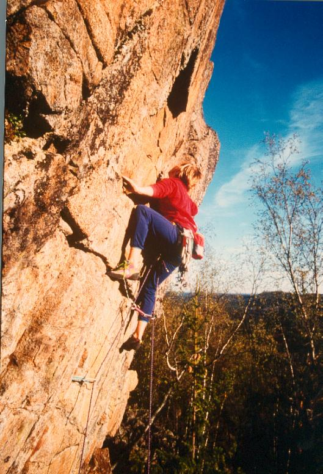

Rödhällsberget ligger en dryg mil nordväst om Hudiksvall. Klippan ligger längst uppe på en kulle, och har en ohygglig anmarsch längs en kraftledningsgata. Väl framme är det lätt att orientera sig; väggen, som är en sydvägg bestående av gnejs, är mer eller mindre sammanhängande i ca 100 meters längd. Bitvis är klippan litet lös, vilket är mest besvärande för de som rensar nyturer; de etablerade lederna är i huvudsak rena och fasta.
Syd-ost om Rödhällsberget finns ett mäktigt stup, Tannaklitten (GPS-koordinater: Lat: N 61º 48' 23.84" Long: E 16º 54' 19.12"). Enligt uppgift är väggen 50 m hög och så brant att om man firar utför den hamnar man 2-3 m ut från basen på väggen. Antagligen är det aldrig klättrat där.
Saknas. Ungefärliga GPS-koordinater: Lat: N 61º 48' 49.18" Long: E 16º 54' 31.67"
Ren och fast klippa där lederna går.
Kategori:Saknar vägbeskrivning Kategori:Saknar karta Kategori:Saknar skiss
Kategori:Hälsingland Kategori:Trad
Kategori:Hälsingland
Copyright (C) Permission is granted to copy, distribute and/or modify this document under the terms of the GNU Free Documentation License, Version 1.3